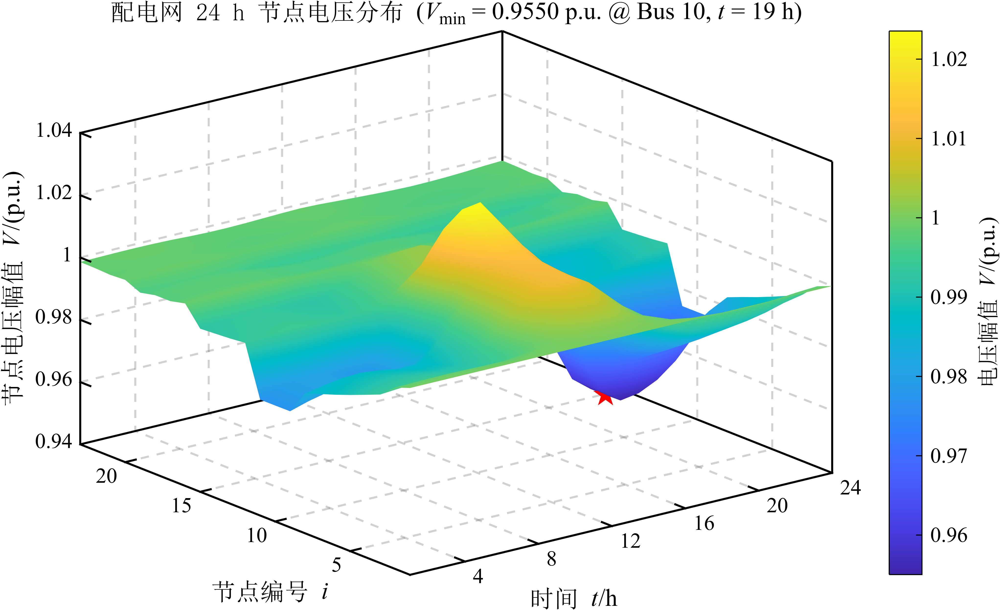
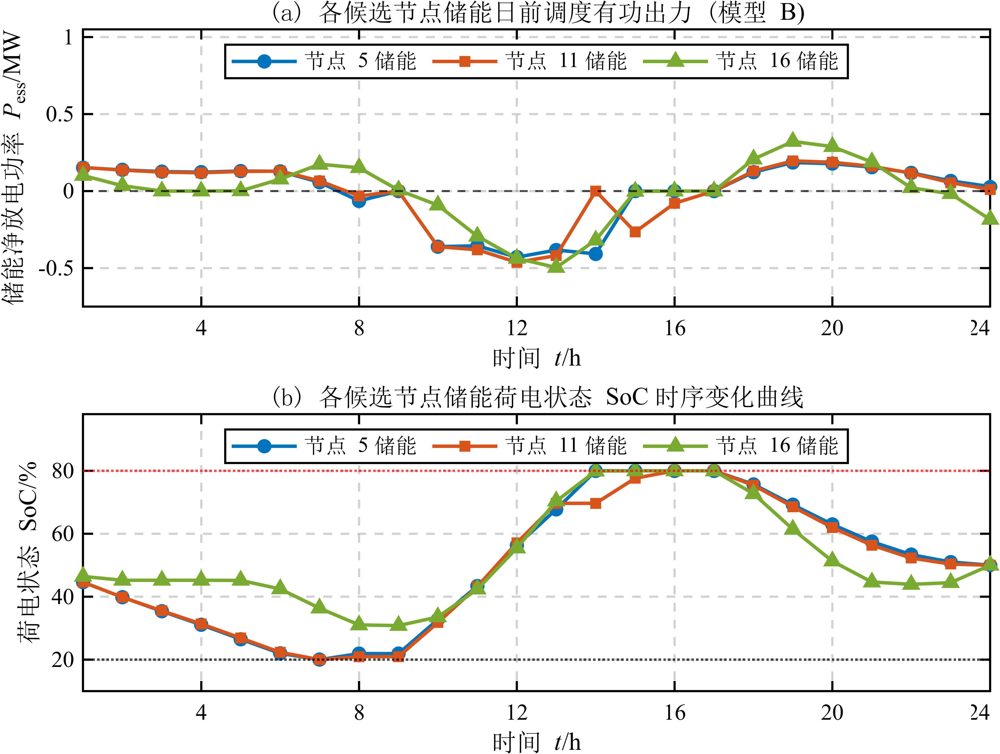

图2 单节点储能充放电功率、电价和荷电状态（日净收益 1553.59 元）
电力工程学院、沈国荣学院
任务一至任务三
姓名 赵吉帅 学号 206231334
| 项目 | 本次设置 |
|---|---|
| 任务范围 | Week 1 任务一、任务二、任务三 |
| 学号映射 | X = 3，Y = 4，α = 1 + 0.002 × 34 = 1.068 |
| 网络与基准 | case_chengshi_A，49 节点/48 支路，12.66 kV / 100 MVA |
| 设备接入节点 | 5、11、16 |
| 任务三目标 | 模型 B 全天有功网损最小 |
| 时间离散 | 24 个时段，Δt = 1 h |
在节点 5、11、16 各接入 0.8 MW 光伏，不配置储能。每个时段从原始算例重新生成负荷，避免连续累乘；有功和无功负荷均乘以个人系数及典型日负荷曲线，光伏仅提供有功功率。调用 MATPOWER runpf 后检查 success，再记录节点电压与各支路有功损耗。

| 指标 | 结果 | 含义 |
|---|---|---|
| 最低电压 | 0.9550 p.u. | 距 0.95 下限 0.005 p.u. |
| 薄弱节点与时段 | 节点 10，第 19 时段 | 18:00—19:00 晚高峰 |
| 全天网损电量 | 0.3575 MWh | 24 时段有功损耗积分 |
午间光伏注入使部分节点电压抬升，晚间光伏出力为零而负荷接近峰值，节点 10 电压降落最明显。基态最低电压尚未越限，但裕度较小。
将附加负荷倍率由 1.00 调整为 1.10，实际负荷系数由 1.068 增至 1.1748。
| 指标 | 倍率 1.00 | 倍率 1.10 |
|---|---|---|
| 实际负荷系数 α | 1.0680 | 1.1748 |
| 最低电压 / p.u. | 0.9550 | 0.9502 |
| 最低电压节点与时段 | 10 / 19 | 10 / 19 |
| 全天网损电量 / MWh | 0.3575 | 0.4050 |
增加 10% 负荷后，最低电压下降约 0.0048 p.u.；全天网损增加约 0.0475 MWh，增幅约 13.3%。
第 t 时段表示 (t−1):00 至 t:00。系统阻抗基准为 12.66²/100 = 1.6028 Ω；case_chengshi_A 已在内部完成阻抗换算。网络优化中的功率再除以 100 MVA 基准容量。典型日光伏在第 12 时段达到峰值，负荷在第 19 时段达到峰值。
储能额定功率 2 MW，额定能量 2 MWh，充电效率 0.90，放电效率 0.95。SoC 范围 0.10~1.00，初始与日末均为 0.50。不计网络潮流，按课程给定电价结算。
| 电价类型 | 时段编号 | 元/kWh |
|---|---|---|
| 低谷 | 1—8 | 0.3180 |
| 平段 | 9—14、18、23—24 | 0.6715 |
| 高峰 | 15—17、19—22 | 1.1248 |
| 模型 | 日收益 / 元 | 最大同时充放电 / MW |
|---|---|---|
| MILP（互斥） | 1553.59 | 0 |
往返效率为 0.90 × 0.95 = 85.5%。在正电价、相同买卖电价且无网络约束条件下，同时充放电只增加损耗，LP 与 MILP 取得相同最优收益。谷段购入、峰段售出形成价差套利，平段也可充电后在峰段售出。
节点 5、11、16 各配置 1.5 MW/3 MWh 储能，三站总额定功率 4.5 MW、总额定能量 9 MWh；各节点光伏容量 1.2 MW，允许弃光。充放电效率 0.90/0.95，SoC 范围 0.20~0.80，初末均为 0.50。节点电压约束 0.95~1.05 p.u.。
采用 MOSEK 求解 MISOCP，72 个整数变量、1152 个锥约束，约 68 s 完成，状态最优。

| 指标 | 结果 |
|---|---|
| 模型全天网损电量 | 0.1735 MWh |
| 全天弃光电量 | 5.6816 MWh |
| 关口购电成本 | 21579.96 元 |
| 交流节点电压范围 | 0.9694 ~ 1.0000 p.u. |
| 最大二阶锥松弛间隙 | 3.05×10−11 |
三站在凌晨及晚间主要放电，白天光伏较强时段充电，SoC 在清晨接近 20%、午后达到 80%、日末回到 50%。模型 B 通过调整储能和削减光伏取得最低网损，但购电费用较高。
将优化后的光伏和储能有功出力代入 MATPOWER 交流潮流回代，检查充放电互斥、二阶锥松弛间隙及模型与交流电压差异。
| 检查项 | 结果 | 结论 |
|---|---|---|
| 同时充放电最大重叠功率 | 0.00 MW | 互斥成立 |
| 最大二阶锥松弛间隙 | 3.05×10−11 | 数值上接近等式 |
| 交流最低/最高电压 | 0.9694 / 1.0000 p.u. | 位于 0.95~1.05 范围内 |
| 项目 | 任务一 | 任务三 |
|---|---|---|
| 单节点光伏容量 | 0.8 MW | 1.2 MW |
| 单节点储能配置 | 无 | 1.5 MW / 3 MWh |
| 光伏出力方式 | 按曲线全部注入 | 允许弃光并参与优化 |
| 最低交流电压 / p.u. | 0.9550 | 0.9694 |
| 全天网损 / MWh | 0.3575 | 0.1735 |
第一周三个任务形成完整分析链条：任务一确定薄弱节点及高风险时段；任务二说明功率、容量、效率和终端 SoC 对套利的共同约束；任务三将储能运行放入配电网，协调支路潮流、电压与光伏出力。模型 B 原始结果通过了充放电互斥、松弛间隙和交流电压检查，同时暴露出较高弃光率这一目标取舍。
本次分析采用确定性典型日曲线和固定设备容量。任务二收益不含储能折旧与运维，任务三未纳入无功调节及显式线路热限额；结论用于本课程设置下的运行策略比较，不外推为实际工程投资收益或全约束运行结论。